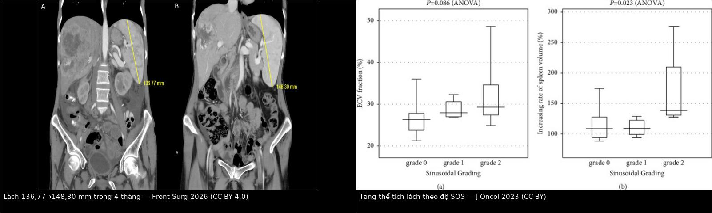
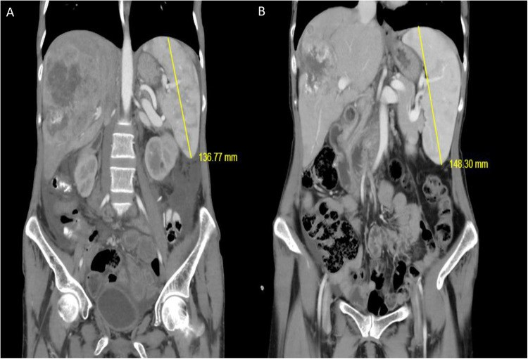
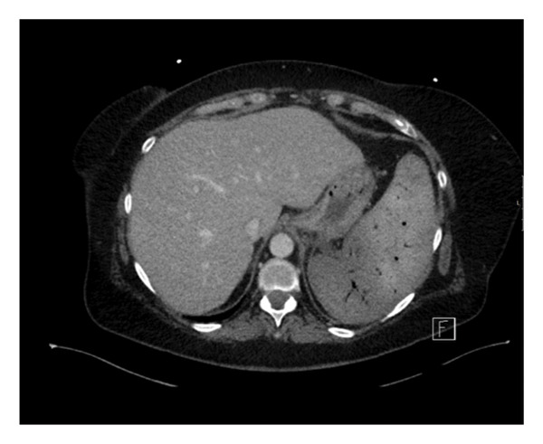

1792 — Lách to và giảm tiểu cầu do oxaliplatin: lách là "áp kế" của hệ cửa / Oxaliplatin-induced splenomegaly and thrombocytopenia
Tags: pattern:lach-to pattern:giam-tieu-cau pattern:gia-di-can vung:lach vung:bung vung:gan protocol:CT-bung-co-can-quang protocol:sieu-am-bung protocol:MRI-gan score:CTCAE-v5 incidentaloma:lach-to
Mức chắc chắn (certainty): tổng hợp y văn (literature synthesis) — số liệu đọc từ toàn văn các bài mở: đoàn hệ 181 bệnh nhân ung thư trực tràng (Cancer Medicine 2026, PMC13458283, CC BY-NC-ND — chỉ dùng số liệu, không lấy ảnh), đoàn hệ phẫu thuật cắt gan 2025 (Hepatobiliary Surgery and Nutrition, PMC12170277, CC BY-NC-ND), phân tích mô bệnh–ECV (Journal of Oncology 2023, PMC9943597, CC BY), báo cáo ca nút mạch lách (Frontiers in Surgery 2026, PMC13057329, CC BY; Case Reports in Hematology 2026, PMC12905002, CC BY). Ca nguyên văn giữ đúng chú thích gốc; chỗ nguồn khác nhau được ghi rõ.
1. Tổng quan bệnh học – cơ chế hình ảnh
- Câu hỏi thực hành: bệnh nhân đại trực tràng đang FOLFOX/XELOX, theo dõi thấy lách to dần + tiểu cầu tụt. Đây là di căn lách, giảm tiểu cầu miễn dịch (ITP), ức chế tủy do hóa chất, hay tăng áp cửa do oxaliplatin? Câu trả lời đổi hoàn toàn việc làm: truyền tiểu cầu/corticoid, giảm liều, hay ngừng oxaliplatin và chuẩn bị can thiệp mạch.
- Cơ chế chuỗi (vì sao lách to):
- Oxaliplatin → tổn thương tế bào nội mô xoang gan (sinusoidal endothelial cells): xoang giãn, xuất huyết vi thể, xơ hóa quanh xoang, tắc các nhánh tĩnh mạch cửa nhỏ → hội chứng tắc xoang gan (sinusoidal obstruction syndrome, SOS) / bệnh mạch cửa-xoang (porto-sinusoidal vascular disease, PSVD).
- Tăng áp cửa (trước xoang) → ứ máu lách → lách to; lách to là dấu hiệu sớm và định lượng được của mức tổn thương xoang, trước khi có varices/cổ trướng.
- Lách to → bể chứa tiểu cầu (splenic sequestration) tăng; đồng thời gan tổn thương giảm sản xuất thrombopoietin (TPO) và oxaliplatin độc trực tiếp lên megakaryocyte → giảm tiểu cầu ba đường (ức chế tủy + giảm TPO + ứ lách).
- TẠI SAO dùng thể tích lách làm thước đo: lách là tạng đàn hồi, giãn được, thể tích thay đổi hàng chục phần trăm trước khi có triệu chứng; còn tiểu cầu phản ánh hậu quả (ứ + giảm sinh). Vì vậy thể tích lách là biến sớm, tiểu cầu là biến muộn — và hai biến này tương quan nghịch có ý nghĩa (p < 0,001 với thể tích lách và với AST; n = 181, PMC13458283).
- Số liệu định lượng:
- Tần suất: giảm tiểu cầu 50% khi oxaliplatin đơn trị; 37% số chu kỳ FOLFOX4 so với 4% số chu kỳ FOLFIRI (gộp 2 thử pha III, 2.145 bệnh nhân — review Current Oncology 2025, PMC12384460). Trong đoàn hệ TNT 181 ca: giảm tiểu cầu 65,2% (118/181), lách to 38,1% (69/181).
- Lách to: tới ~90% bệnh nhân có oxaliplatin trong các loạt khác nhau, thể tích tăng trung bình ~31%; 86% tăng kích thước lách sau FOLFOX bổ trợ (PMC12170277, PMC9943597). Định nghĩa dùng trong nghiên cứu: tỉ lệ thể tích lách > 1,3 (tức tăng > 30%); nhiều nhóm lâm sàng dùng đường kính lớn nhất > 12 cm trên CT là lách to.
- Mức tăng theo độ mô bệnh: nhóm SOS độ 2 có mức tăng thể tích lách trung vị ~135% (khoảng tứ phân vị tới
205%), cao hơn rõ so với độ 0–1 (105–110%); p = 0,023 (PMC9943597). - Ngưỡng tiên lượng trước cắt gan: tăng thể tích lách > 8,6% dự báo biến chứng gan–mật sau mổ (AUC 0,62; p = 0,02); nhóm này nhận oxaliplatin nhiều hơn (p < 0,001), nhiều xơ gan hóa (p = 0,03) và giảm tiểu cầu trước mổ (p < 0,001) — PMC12170277.
- Thời gian: giảm tiểu cầu và rối loạn chức năng gan do oxaliplatin có thể kéo dài 1–2 năm sau khi kết thúc hóa trị (PMC11634394).
- Yếu tố bảo vệ: thêm bevacizumab làm chậm thời điểm lách to ≥ 30% (p = 0,02) và giảm tỉ lệ giảm tiểu cầu (JNCI 2018, PMID 29346573) — nên đừng quy mọi lách to cho "hóa trị" mà bỏ qua phác đồ có/không bevacizumab.
- Vì sao lách to lại là "di căn giả" trên hình ảnh: lách to + nhiều nốt gan mới sau hóa trị là bộ đôi của SOS + nốt tăng sản FNH-like (bài 1733); đọc lách to giúp nghĩ đúng bối cảnh trước khi gọi nốt gan là di căn.
2. Mẫu hình + chẩn đoán phân biệt theo bối cảnh (Gamut)
- Khuôn 1 — Lách to MỚI + tiểu cầu giảm, đang hoặc vừa xong oxaliplatin, gan có/không có dấu SOS. Gamut: SOS/PSVD do oxaliplatin vs di căn lách vs ITP vs ức chế tủy do hóa chất vs huyết khối tĩnh mạch cửa/lách. Chốt: thể tích lách tăng > 30% so với trước điều trị + tiểu cầu tương quan nghịch + không có ổ lách khu trú.
- Khuôn 2 — Lách to đơn độc, không giảm tiểu cầu. Gamut: sung huyết (SOS, suy tim phải, huyết khối TM lách) vs thâm nhiễm (lymphoma, leukemia) vs nhiễm trùng (sốt rét, EBV) vs bệnh dự trữ vs lách phụ to. Chốt: cấu trúc nhu mô đồng nhất + bối cảnh; nốt giảm tỷ trọng trong lách to → nghĩ di căn hoặc lymphoma, không phải SOS.
- Khuôn 3 — Giảm tiểu cầu đơn độc, lách bình thường. Gamut: CIT (ức chế tủy) vs ITP vs TTP/HUS vs DIC vs thiếu B12/acid folic. Chốt: kích thước lách bình thường là chốt loại mạnh cho ứ lách; ITP không lách to.
- Khuôn 4 — Lách to + tiểu cầu thấp ở bệnh nhân CHUẨN BỊ cắt gan. Gamut: tăng áp cửa do SOS vs xơ gan nền vs di căn lách. Chốt: tăng thể tích lách > 8,6% và tiểu cầu < 100 × 10⁹/L → nguy cơ biến chứng gan sau mổ, cân nhắc nút mạch lách trước mổ.
- Khuôn 5 — Lách to + sốt + ổ giảm tỷ trọng trong lách. Gamut: áp-xe lách vs nhồi máu lách vs di căn lách hoại tử. Chốt: khí trong ổ + sốt → áp-xe; hình nêm ngoại vi → nhồi máu (bài 146).
- Gợi nhớ SPLEEN: Sinusoidal injury (oxaliplatin) · Portal hypertension · Low platelets · Enlarged spleen · Exclude metastasis · Normal marrow/ITP workup.
3. Bảng so sánh phân biệt (ma trận đối chiếu)
| Thực thể (entity) | Hình ảnh điển hình | Chốt vào (rule-in) | Chốt loại (rule-out) | Gợi ý xác nhận |
|---|---|---|---|---|
| Lách to do oxaliplatin/SOS (bài này) | Lách to đồng nhất, tăng dần theo chu kỳ; thể tích tăng > 30%; có thể kèm gan to, cổ trướng, giãn tĩnh mạch thực quản, nốt FNH-like | Tiền sử oxaliplatin + lách to mới + tiểu cầu tương quan nghịch + không ổ khu trú | Ổ giảm tỷ trọng trong lách + sốt → không phải SOS đơn thuần | Đo thể tích lách trên CT (3D Slicer), so phim trước điều trị; đếm tiểu cầu mỗi chu kỳ |
| Di căn lách | Ổ giảm tỷ trọng đơn độc hoặc nhiều ổ, bờ không đều; thường không làm lách to cấp tính | Nốt khu trú trong lách + ung thư đã biết (đại tràng trái, vú, phổi, melanoma) | Lách to đồng nhất, không ổ → không phải di căn | CT 4 thì/MRI; PET-FDG; không chọc lách mù |
| ITP (giảm tiểu cầu miễn dịch) | Lách bình thường; không lách to, không ổ | Tiểu cầu thấp đơn độc + lách bình thường + tủy nhiều megakaryocyte | Lách to > 12 cm → không phải ITP đơn thuần | Công thức máu, tủy đồ, loại trừ thuốc |
| CIT (ức chế tủy do hóa chất) | Lách bình thường; có thể kèm giảm bạch cầu/hemoglobin | Giảm cả 2–3 dòng, hồi phục theo chu kỳ, không lách to | Chỉ tiểu cầu giảm + lách to → nghĩ ứ lách/TPO | Đếm tế bào gốc, thời gian hồi phục sau chu kỳ |
| Huyết khối TM lách/cửa | Lách to + ổ nhồi máu nêm ngoại vi; huyết khối trong lòng mạch trên CT 4 thì | Khuyết thuốc trong lòng TM lách/cửa + nhồi máu nêm | Mạch thông, không nhồi máu → không phải huyết khối | CTA/CT tĩnh mạch 4 thì; Doppler |
| Lymphoma/thâm nhiễm lách | Lách to không đồng nhất, nốt/tổn thương nhiều ổ, hạch ổ bụng | Nốt lách + hạch + B symptoms | Lách to đồng nhất sau oxaliplatin → nghĩ SOS | PET-CT, sinh thiết hạch (không sinh thiết lách) |
| Lách phụ to / splenosis | Nốt đồng tín hiệu lách ở rốn lách hoặc ổ bụng, không phải lách chính to | Nốt cùng cấu trúc lách, nhiều ổ sau chấn thương/cắt lách | Lách chính tăng thể tích → không phải lách phụ | So sánh tín hiệu mọi thì; xạ hình nhiệt huyết (bài 192) |

*Trái: CT trước (A) và sau 4 tháng (B) — lách dài 136,77 mm → 148,30 mm, cùng bệnh nhân đang hóa trị và cắt gan (Gürel D và cs., Front Surg 2026, CC BY 4.0). Phải: thể tích lách tăng theo độ SOS — độ 2 tăng trung vị ~135%, p = 0,023 (Kai K và cs., J Oncol 2023, CC BY). Ảnh ghép letterbox, giữ nguyên tỷ lệ.*Ba con số dùng để ra quyết định
- > 30% thể tích lách (hoặc > 12 cm đường kính lớn nhất) = lách to có ý nghĩa — ngưỡng nghiên cứu dùng thống nhất.
- < 100 × 10⁹/L tiểu cầu = ngưỡng "có ý nghĩa lâm sàng": tăng nguy cơ hoãn/giảm liều và tái diễn ở chu kỳ sau (PMC12384460); cũng là một tiêu chuẩn tăng áp cửa sớm sau cắt gan (PMC13503494).
- > 8,6% tăng thể tích lách trước mổ = ngưỡng dự báo biến chứng gan–mật sau cắt gan (AUC 0,62) — thấp hơn nhiều so với ngưỡng "lách to" 30%, nên đừng chờ lách to mới lo.
4. Protocol chụp + phân độ và xử trí
- CT bụng có cản quang thì tĩnh mạch cửa là chuẩn đo thể tích lách: lát ≤ 1 mm, tái tạo 3D, segmentation bằng 3D Slicer (phương pháp của PMC12170277). Ghi thể tích (mL) và đường kính lớn nhất (cm), luôn so với phim trước hóa trị.
- Công thức nhanh trên siêu âm/CT: chỉ số lách (splenic index) = dài × rộng × cao (cm³); hoặc tỉ số tiểu cầu / đường kính lách (platelet count/spleen diameter ratio) để ước lượng tăng áp cửa.
- Thời điểm: đo trước chu kỳ đầu (baseline), lặp sau 3–4 chu kỳ và trước mổ gan; nếu tiểu cầu < 100 × 10⁹/L thì đo mỗi chu kỳ.
- Phân độ tiểu cầu theo CTCAE v5.0: độ 1: 75–100; độ 2: 50–75; độ 3: 25–50; độ 4: < 25 × 10⁹/L.
- Ngưỡng thực hành trước khi truyền hóa chất: nhiều trung tâm đặt mục tiêu > 75 × 10⁹/L (ca nguyên văn 1) hoặc > 100 × 10⁹/L (ca nguyên văn 2) tùy phác đồ.
- Nếu cần tiếp tục điều trị mà tiểu cầu không lên: nút mạch lách một phần (partial splenic embolization, PSE) — mục tiêu thể tích nhồi máu 388–540 mL (Beppu, Hepatol Res 2025); PSE 30–35% đưa tiểu cầu 65 → 150 × 10⁹/L sau 5 ngày, đỉnh 174 sau 19 ngày.
- Trước cắt gan lớn: nút mạch lách (SAE) có thể bình thường hóa tiểu cầu trong 2 tuần (419 / 340 / 159 × 10³/µL ở 3 ca) và làm giảm varices — cho phép mổ an toàn (PMC13057329).
flowchart TD
A["Bệnh nhân đang/vừa oxaliplatin: tiểu cầu giảm"] --> B{"Lách to > 12 cm hoặc thể tích tăng > 30%?"}
B -- "Không" --> C["Nghĩ CIT / ITP / thiếu B12: tủy đồ, loại trừ thuốc"]
B -- "Có" --> D{"Có ổ khu trú trong lách, hạch, B symptoms?"}
D -- "Có" --> E["Nghi di căn lách / lymphoma: PET-CT, MRI, sinh thiết hạch"]
D -- "Không" --> F{"Tiểu cầu theo CTCAE v5"}
F -- "Độ 1: 75-100" --> G["Tiếp tục phác đồ, đếm tiểu cầu mỗi tuần, đo lại thể tích lách"]
F -- "Độ 2: 50-75" --> H["Hoãn 1 chu kỳ hoặc giảm liều theo phác đồ; cân nhắc TPO-RA"]
F -- "Độ 3-4: dưới 50" --> I["Ngừng oxaliplatin; truyền tiểu cầu nếu chảy máu; hội chẩn"]
G --> J{"Chuẩn bị cắt gan lớn?"}
H --> J
J -- "Có, tiểu cầu dưới 100" --> K["Cân nhắc SAE/PSE trước mổ: mục tiêu thể tích nhồi 388-540 mL"]
J -- "Không" --> L["Theo dõi 1-2 năm: tiểu cầu và lách có thể hồi phục chậm"]
K --> M["Kiểm tra CT: tránh nhồi máu TOÀN BỘ lách và đuôi tụy"]
5. Biến thể bình thường và cạm bẫy
- Cạm bẫy 1 — Đo lách bằng một đường kính. Đường kính dọc thay đổi theo mặt cắt và người đo; thể tích 3D mới đủ nhạy (ngưỡng tiên lượng chỉ 8,6%). Luôn đo trên cùng pha, cùng máy, cùng tư thế.
- Cạm bẫy 2 — Lách to mà không nghĩ tới nguyên nhân ngoài hóa trị. Suy tim phải, xơ gan, huyết khối TM lách, lymphoma đều gây lách to; hỏi phác đồ có bevacizumab (làm chậm lách to) và xem gan có dấu SOS không.
- Cạm bẫy 3 — "Lách to = di căn". Di căn lách rất hiếm: 37 ca trong y văn, 86,5% xuất hiện muộn (trung vị 24 tháng), 78,4% từ đại tràng trái; biểu hiện là ổ khu trú, không phải lách to đồng nhất (PMC13173727).
- Cạm bẫy 4 — Nhầm lách to với lách phụ/splenosis. Nốt đồng tín hiệu lách ở rốn lách hoặc ổ bụng sau chấn thương/cắt lách không phải lách chính to; so mọi thì và xem tiền sử (bài 192).
- Cạm bẫy 5 — PSE quá tay. Nhồi máu toàn bộ lách gây tiểu cầu tăng vọt 873 × 10⁹/L, nhồi máu đuôi tụy, đau kéo dài và mất chức năng miễn dịch lách; mục tiêu là một phần (30–50%), không phải "càng nhiều càng tốt" (PMC12905002).
- Cạm bẫy 6 — Quy tiểu cầu thấp cho tái phát ung thư. Tiểu cầu và chức năng gan có thể hồi phục chậm 1–2 năm; đừng đổi phác đồ chỉ vì tiểu cầu thấp nếu lách to và không có tổn thương tiến triển.
- Cạm bẫy 7 — Bỏ sót tăng áp cửa thật. Lách to + giãn tĩnh mạch thực quản + cổ trướng sau oxaliplatin là PSVD, không phải xơ gan; chẩn đoán nhầm thành xơ gan làm bệnh nhân mất cơ hội cắt gan (bài 1910, 149).
6. Tự lượng giá — Blind Quiz
Ca 1 — Nữ 45 tuổi, di căn gan đại trực tràng, hóa trị chuyển đổi rồi cắt gan phải. Trước mổ 4 tháng, CT cho thấy lách thay đổi. Tiểu cầu 142 → 80 × 10³/µL. Đọc hai phim và giải thích.

- Hỏi: (1) Lách có to thật không, tính theo ngưỡng nào? (2) Vì sao tiểu cầu tụt cùng lúc? (3) Điều này đổi kế hoạch mổ thế nào?
Bấm để hiện đáp án
- (A) lách dài 136,77 mm; (B) sau 4 tháng 148,30 mm → tăng ~8,4%, vượt ngưỡng 8,6% dự báo biến chứng gan sau mổ (AUC 0,62) và đã > 12 cm.
- Tiểu cầu 142 → 80 × 10³/µL = CTCAE độ 1–2, tương quan nghịch với thể tích lách; kèm cổ trướng → nghĩ SOS/tăng áp cửa do oxaliplatin, không phải di căn.
- Trả lời: (1) có, theo cả ngưỡng > 12 cm và > 8,6%; (2) ứ lách + giảm TPO + độc tủy; (3) trì hoãn/điều chỉnh, cân nhắc SAE trước mổ và mổ ở trung tâm có kinh nghiệm cắt gan sau hóa trị.
- Nguồn: Gürel D và cs., Front Surg 2026, Fig. 2 (PMC13057329, CC BY 4.0). Phản biện: ca này lách chỉ tăng 8,4% nhưng đã có cổ trướng — cho thấy ngưỡng thể tích không thay thế được đánh giá tăng áp cửa lâm sàng.
Ca 2 — Bệnh nhân ung thư vú, tiểu cầu nền 80–90 × 10⁹/L, cần paclitaxel + trastuzumab. Nút mạch lách một phần được thực hiện, nhưng CT sau đó cho hình dưới. Tiểu cầu 21 ngày sau là 873 × 10⁹/L. Sai ở đâu?

- Hỏi: (1) Hình cho thấy gì? (2) Vì sao tiểu cầu tăng quá mức? (3) Biến chứng kèm theo và bài học?
Bấm để hiện đáp án
- (1) nhồi máu toàn bộ lách: nhu mô lách giảm tỷ trọng, không ngấm thuốc, còn vỏ/viền; dự kiến chỉ nút nhánh dưới bằng hạt 500–900 µm nhưng CT cho thấy toàn bộ lách.
- (2) Mất toàn bộ nhu mô lách → mất bể chứa tiểu cầu, tiểu cầu tăng bù 873 × 10⁹/L sau 21 ngày (nguy cơ huyết khối).
- (3) Kèm nhồi máu đuôi tụy (đau, tăng amylase) và bệnh nhân mất cửa sổ hóa trị; mục tiêu đúng là nhồi một phần 30–50%, thể tích nhồi 388–540 mL, không phải toàn bộ.
- Nguồn: Ridha Z và cs., Case Rep Hematol 2026, Fig. 3 (PMC12905002, CC BY 4.0).
Ca 3 — Nam 60 tuổi, ung thư đại tràng sigma mổ 3 năm trước, theo dõi CT thấy lách to 14 cm và một ổ 3 cm giảm tỷ trọng ở cực dưới lách. Tiểu cầu 88 × 10⁹/L. Có phải chỉ là "lách to do oxaliplatin"?
Bấm để hiện đáp án
- Không. Lách to đồng nhất sau oxaliplatin không có ổ khu trú; ổ giảm tỷ trọng trong lách ở bệnh nhân đại tràng trái là di căn lách cho tới khi chứng minh khác — dù hiếm (37 ca y văn, 78,4% từ đại tràng trái, trung vị 24 tháng).
- Xử trí: MRI lách/CT 4 thì + PET-FDG, hội chẩn; không chọc sinh thiết lách mù vì nguy cơ chảy máu; nếu đơn độc → cắt lách có tiên lượng tốt (DFS 89,3%).
- Bài học: hai tổn thương có thể cùng tồn tại — lách to do SOS không loại trừ di căn lách; phải đọc nhu mô lách từng thì, không chỉ đo kích thước.
- Nguồn số liệu: Li Y, Hu J, World J Surg Oncol 2026 (PMC13173727, CC BY-NC-ND).
Bài liên quan chéo
- 1910 – Hội chứng tắc xoang gan (SOS) do oxaliplatin (cơ chế nền; lách to là dấu định lượng)
- 1733 – Nốt tái tạo FNH-like sau hóa trị (bộ đôi "lách to + nốt gan mới")
- 140 – Lách tăng đặc (gamut lách to và tổn thương lách)
- 146 – Huyết khối TM lách và nhồi máu lách (phân biệt nhồi máu nêm với SOS)
- 192 – Splenosis và lách phụ sau cắt lách (cạm bẫy nốt đồng tín hiệu lách)
- 149 – Tăng áp cửa không xơ gan (PSVD, chẩn đoán phân biệt với xơ gan)
Không dùng để chẩn đoán độc lập khi chưa có người hướng dẫn.